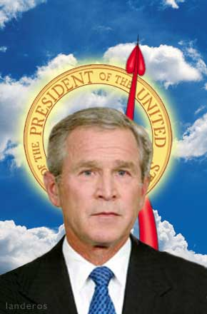

|

The President of Good & Evil
The ethics of George W. Bush.
- - - - - - - - - -
by Peter Singer
We are in a conflict between good and evil, and America will call evil by its name.
- George W. Bush, United States Military Academy, West Point, June 1, 2002
 eorge W. Bush is not only America's president, but also its most prominent moralist. No other president in living memory has spoken so often about good and evil, right and wrong. His inaugural address was a call to build a single nation of justice and opportunity. A year later, he famously proclaimed North Korea, Iran and Iraq to be an axis of evil, and in contrast, he called the United States a moral nation. He defends his tax policy in moral terms, saying that it is fair, and gives back to taxpayers what is rightfully theirs. The case he makes for free trade is not just monetary, but moral. Open trade is a moral imperative. Another moral imperative, he says, is alleviating hunger and poverty throughout the world. He has said that America's greatest economic need is higher ethical standards. In setting out the Bush doctrine, which defends preemptive strikes against those who might threaten America with weapons of mass destruction, he asserted: Moral truth is the same in every culture, in every time, and in every place. But in what moral truths does the president believe? Considering how much the president says about ethics, it is surprising how little serious discussion there has been of the moral philosophy of George W. Bush. eorge W. Bush is not only America's president, but also its most prominent moralist. No other president in living memory has spoken so often about good and evil, right and wrong. His inaugural address was a call to build a single nation of justice and opportunity. A year later, he famously proclaimed North Korea, Iran and Iraq to be an axis of evil, and in contrast, he called the United States a moral nation. He defends his tax policy in moral terms, saying that it is fair, and gives back to taxpayers what is rightfully theirs. The case he makes for free trade is not just monetary, but moral. Open trade is a moral imperative. Another moral imperative, he says, is alleviating hunger and poverty throughout the world. He has said that America's greatest economic need is higher ethical standards. In setting out the Bush doctrine, which defends preemptive strikes against those who might threaten America with weapons of mass destruction, he asserted: Moral truth is the same in every culture, in every time, and in every place. But in what moral truths does the president believe? Considering how much the president says about ethics, it is surprising how little serious discussion there has been of the moral philosophy of George W. Bush.
Bush's tendency to see the world in terms of good and evil is especially striking. He has spoken about evil in 319 separate speeches, or about 30 percent of all the speeches he gave between the time he took office and June 16, 2003. In these speeches he uses the word evil as a noun far more often than he uses it as an adjective914 noun uses as against 182 adjectival uses. Only 24 times, in all these occasions on which Bush talks of evil, does he use it as an adjective to describe what people dothat is, to judge acts or deeds. This suggests that Bush is not thinking about evil deeds, or even evil people, nearly as often as he is thinking about evil as a thing, or a force, something that has a real existence apart from the cruel, callous, brutal and selfish acts of which human beings are capable. His readiness to talk about evil in this manner raises the question of what meaning evil can have in a secular modern world.
My professional interest in the president's ethics dates from his intervention in my own field, bioethics, in his first special prime-time televised address to the nation as president on August 9, 2001. The speech was devoted to the ethical questions raised by stem cell research. I was preparing to teach a graduate seminar on bioethics when I learned that Bush was going to speak to the nation on that topic. Issues about the moral status of human embryos were part of the syllabus for my course, and I thought it might be interesting for my students to read and discuss what the president had to say. As an educational tool, that worked well, for the speech provides a clear example of an unargued assumption that is very common in the debate about abortion and early human life. Following the events of September 11, 2001, the nation turned from its discussion of stem cells to terrorism and how to respond to it. But once Bush's ethics had caught my attention in one field, I paid more attention to all the other issues that he saw in moral terms. To what extent, I asked myself, does the president have a coherent moral philosophy? Is there a clear moral view lying behind the particular views he expresses, and if so, what is it?
This book expounds George W. Bush's ethic as it is found in his speeches, writings, and other comments, as well as in the decisions he has made as an elected official. It does not attempt the impossible task of covering everything he has said and done, or even every major issue of his presidency, but instead focuses on those issues that most sharply raise fundamental ethical principles and hence reveal the president's views about right and wrong.
Once we are clear on what Bush's ethic is, the question arises: how sound is it? Or at least, that question arises for everyone who believes that there is a role for reason and argument in ethics. Some think that all we can ever do in ethics is state our own position, and if others hold different views, we can no more argue against them than we can argue over matters of taste. Bush rejects this skepticism about morality. Speaking at the inauguration of his second term as governor of Texas, he said that our children must be educated not only in reading and writing, but also in right and wrong, adding: Some people think it's inappropriate to make moral judgments anymore. Not me. Well, not me either, so that is one view about morality on which the president and I agree. If reason and argument were of no use in reaching ethical judgments, we would not be educating our children in right and wrong, we would be indoctrinating them in the views our society holds, or the views we hold, without giving them reasons for thinking those views to be true. I'll assume that when Bush said that our children should be educated in right and wrong, he did not mean that we should be indoctrinating them. So he must think, as I do, that we can usefully discuss different possible ethical views, and judge which of them are more defensible. In the course of this book I argue that Bush's own moral positions are often not defensible. If I succeed in persuading you of this, I will have established that Bush is at least correct when he asserts that it is possible to educate people in right and wrong.
As we have already seen, Bush's readiness to talk about right and wrong goes back long before September 11, 2001, before his election as president, and before his campaign for that office focused on the idea that (in what everyone understood to be a contrast to Bill Clinton) he would bring honor and dignity to the White House. Bush begins his preelection memoir, A Charge to Keep, by saying that one of the defining moments in his life came during the prayer service just before he was to take the oath of office for his second term as governor of Texas. As Bush tells the story, Pastor Mark Craig said that people are starved for leaders who have ethical and moral courage ... leaders who have the moral courage to do what is right for the right reason. Bush tells us that this sermon spoke directly to my heart and my life, challenging him to do more than he had done in his first four years as governor. He resolved, it seems, to be the kind of leader for which, as Pastor Craig had said, the people are starved.
But despite Bush's assertion that Craig's speech was one of those moments that forever change you ... that set you on a different course, it seems that he was on that course already. Morality was center stage in his inaugural speech for his second term as governor, which he had obviously prepared before he heard Craig's sermon. After saying that our children need to be educated in right and wrong, he went on to say, "They must learn to say yes to responsibility, yes to family, yes to honesty and work ... and no to drugs, no to violence, no to promiscuity or having babies out of wedlock". Precisely at what point Bush decided to make ethics a central theme of his public life is difficult to say. Perhaps it was during a summer weekend in 1985, when Bush had joined his parents and other family members at the Bush summer residence in Kennebunkport, Maine. The evangelist Billy Graham was invited to join the family, and as Bush walked along the beach, Graham reportedly asked him if he was right with God. Bush replied that he wasn't sure, but the conversation started him thinking about it. In A Charge to Keep he pinpoints this as the moment when Reverend Billy Graham planted a mustard seed in my soul that led him to recommit my heart to Jesus Christ and become a regular reader of the Bible. Certainly Bush's Christian beliefs play an important role in his moral thinking.
The fact that George W. Bush is the president of the world's only superpower is reason enough for wanting to understand his moral views. But it is not the only reason. Bush represents a distinctively American moral outlooknot, of course, one shared by all Americans, but nevertheless one that plays a more central role in American public life than it plays anywhere else. Having lived most of my life outside the United States, I am frequently struck by how differently Americans think from Europeans, Australians, and even Canadians about social, political and ethical issues. Bush and I are of the same generationindeed, we were born on the same day, July 6, 1946and yet in some ways we live in different ethical universes. To understand Bush better is to understand one strand in the complex set of ideas that makes America different. So this book is not only a study of the ethics of one United States president, but also an outsider's look at a major strand of American thinkingthe way of thinking that currently guides the policies of the world's dominant nation, and that openly espouses the aim of making the twenty-first century the American century.
Given the global significance of Bush's views of right and wrong, it may seem surprising that philosophers have paid little attention to his ethics. One likely reason for this is that philosophers consider him unworthy of their attention. When I have told friends and colleagues that I am working on a book about Bush's ethics, some of them quip that the phrase is an oxymoron, or that it must be a very short book. Don't I realize, they ask in incredulous tones, that Bush is just another politician who says whatever he thinks will get him elected, or reelected? He doesn't even have the attention span, they tell me, let alone the brainpower, to think out a coherent philosophy. Instead of wasting my time by taking his remarks on ethics seriously, they suggest, I should expose the hypocrisy of all his talk about morality. I should show that what he actually does is always in the interests of his Texan friends in the oil industry, or of the big corporations and wealthy individual donors who contribute so heavily to his campaign coffers.
There are times during this book when I do ask whether what Bush does is consistent with what he says he believes, and after I have done that, I will ask whether the cynical view my friends have taken is correct. Obviously Bush is a politician, and subject to the same pressures as any politician, but I think the truth is more complex than my skeptical friends suggest. Even if they are right about the president's motives, however, that doesn't drain all the interest from the moral philosophy that he defends. Tens of millions of Americans believe that he is sincere, and share the views that he puts forward on a wide range of moral issues. They also accept unquestioningly the bright, positive image of America and its unique goodness that shines through his speeches. Those who think I am naive about Bush's own views may therefore see what follows as an examination and critique of a set of beliefs widely shared by the American public, no matter whether the chief spokesperson for the position really believes what he saying. So in the pages that follow my starting point is to take what Bush says at face value, and inquire how defensible the positions that he espouses are
Excerpted from The President of Good and Evil: The Ethics of George W. Bush

|